Redis分布式锁

什么是分布式锁？
分布式锁就是为了保证在分布式场景下，共享资源在同一时刻只能被一个线程访问，或者说是用来控制分布式系统之间同步访问共享资源。
分布式锁有什么特性？
- 互斥性：在任意时刻，同一条数据只能被一台机器的一个线程访问。
- 高可用性：当部分节点宕机后，客户端仍可以正常的获取锁和释放锁。
- 独占性：加锁和释放锁必须在同一台服务器执行，不能在一个服务器上获取锁，在另一个服务器释放锁。
- 防锁超时：如果客户端没有主动释放锁，服务器会在一定时间后自动释放锁，防止客户端宕机或者网络异常导致宕机。
分布式锁的实现方法？
基本思路就是要在整个系统中提供一个全局、唯一的“锁”，每个系统需要加锁时，都去尝试获取这个“锁”。
Redis 如何实现分布式锁
前面写了分布式锁的特性，其实实现分布式锁就是围绕这些特性展开的。
Redis 实现分布式锁的主要命令：SETNX，该命令的作用是当 key 不存在时设置 key 的值，当 key 存在时，什么都不做。
先来看最简单的实现方式，如下图：

从上图可以看到主要两个关系步骤，加锁和解锁。
但是这个简陋的分布式锁存在很多问题，并不难满足上述介绍的分布式锁的特性，比如，当线程1执行到上图中执行业务这步时，业务代码突然出现了异常，无法进行删除锁这一步，那就G了，死锁了，其它线程也无法获取到锁了（SETNX 特性）。
改进方案 1
一提到异常，有人就想到了 try-catch-finally 了，把删除锁的操作放到 finally 代码块中，就算出现异常，也是能够正常释放锁的，执行业务出现异常这个问题解决了。但是这并不靠谱，如果 Redis 在执行业务这步宕机了呢，finally 代码块也不会执行。
改进方案 2
其实这个问题也好解决，只需要给锁设置一个过期时间就可以，对 key 设置过期时间在 Redis 中是常规操作了。SET key value [EX seconds][PX milliseconds] [NX|XX]
- EX second: 设置键的过期时间为second秒；
- PX millisecond：设置键的过期时间为millisecond毫秒；
- NX：只在键不存在时，才对键进行设置操作；
- XX：只在键已经存在时，才对键进行设置操作；
- SET操作完成时，返回OK，否则返回nil。
那现在这个方案就没问题了吗？显然没有
例如，线程 1 获取了锁，并设置了有效时间 10 秒，但是线程 1 在执行业务时超过了 10 秒，锁到期自动释放了，在释放后，线程 2 又获取了锁，在线程 2 执行业务时，线程 1 执行完业务了，随后执行了删除锁这一步，但是线程 1 的锁自动释放了，它删除的是线程 2 的锁。
改进方案 3
其实看起来方案 2 的问题很容易解决，只要把锁的过期时间设置的很长，就可以避免两个问题，但是这样并不可行，因为这样相当于回到最简陋的方案（会导致线程 2 一直获取不到锁（线程 1 因异常未能删除锁的情况下））。
如何解决线程 1 释放线程 2 的锁这一问题？
很简单，可以为锁加一个标识，例如生成一个 UUID，作为锁的标识，每个线程获取锁时都会生成一个不同的 UUID 作为标识，在删除锁时会进行判断，锁的标识和自己生成 UUID 相同时才能进行删除操作。
那么如何确定锁的过期时间呢？
可以在加锁时，设置一个预估的过期时间，然后开启一个守护线程，定时检测这个锁的失效时间，如果快要过期了，操作还未完成，那么就自动对锁进行“续费”。
那方案 3 就没有问题了吗？并不是，比如方案 3 的分布式锁还不具备可重入性（同一线程可以重复获取锁，解决线程需要多次进入锁内部执行任务的问题）
改进方案 4
参考其他重入锁的设计，通过对锁进行重入计数，加锁时加 1，解锁时减 1，计数为 0 时才能释放锁。
那现在的方案还有问题吗？其实还有，比如，线程 1 获取了锁，线程 2 没能获取到锁，那么线程 2 怎么知道线程 1 什么时候释放了锁，进而再去获取锁呢？
改进方案 5
方案 4 中问题，一般有两种解决方案：
- 可以通过客户端轮询的方式，就是线程 2 过一会就过来看看是不是能获取锁了。这种方案比较消耗服务器资源，当并发量比较大时，会影响服务器的效率。
- 通过 Redis 的发布订阅功能，当获取锁失败时，订阅锁信息，获取锁成功后释放时，发布释放锁信息。
现在这个方案完美了吗？没有
目前讨论的都是单节点的情况，如果这个节点挂了，那么所有的客户端都获取不到锁了。
改进方案 6
为了实现 Redis 的分布式锁，Redis 的作者提出了 RedLock 算法(英文好的可以直接去官网查看)。
首先介绍保证分布式锁的有效性和安全性的要求：
- 互斥性：在任何给定时刻，只有一个客户端可以持有一个锁。
- 释放死锁：获取锁的客户端崩溃或者被分区，也可以释放锁。
- 容错性：只要大多 Redis 节点都在运行，客户端就能获取和释放锁。
为什么基于故障转移实现的 Redis 分布式锁还不够用?
官网中举了一个例子：
客户端A获得主服务器上的锁，然后主服务器向从服务器复制数据的过程中崩了，导致数据没有复制到从数据库中，这时会在从服务器中选出来一个升级为主服务器，但新的主服务器中并没有客户端A设置的锁。所以客户端B也可以获取到锁，违背了上面说的互斥性。
这就解释了为什么使用 RedLock 算法。
RedLock 算法
假设有 5 个完全独立的 Redis 服务器，多节点 Redis 实现的 RedLock 算法如下：
- 获取当前时间戳。
- 客户端尝试在 5 个实例中按顺序获取锁，在所有实例中使用相同的键名和随机值。当在每个实例中设置锁时，需要将锁的获取时间设置的比锁过期时间短很多。例如，如果锁自动释放时间为 10 秒，则锁的获取时间在 5-50 毫秒。这是为了不要过长时间等待已经关闭的 Redis 实例，如果一个 Redis 实例不可用，我们应该尽快尝试下一个 Redis 实例。
- 客户端通过从当前时间中减去步骤 1 中获取的时间戳，计算出获取锁所需的时间。当且仅当客户端能够在大多数实例（本例至少 3 个）中获取锁，并且化费在获取锁的总时间小于锁的有效性时间，该锁则被认为已经获得。
- 如果获得了锁，锁真正的有效时间为锁初始设置的有效时间（过期时间）减去步骤 3 的时间，例如：锁初始的有效时间为 5s，获取锁花了 0.5s，则锁真正的有效时间为 4.5s（忽略了时钟偏移，时钟偏移指两个电脑间时间流速基本相同的情况下，两个电脑（或两个进程）时间的差值）
- 如果客户端由于某些原因无法获取锁（要么无法锁定 N/2 + 1 个 Redis 实例，要么锁的有效时间为负数），客户端将尝试解锁所有的 Redis 实例（即时是它认为无法锁定的 Redis 实例）
RedLock 算法是异步的吗？
可以看成同步算法，虽然没有跨进程的同步时钟，但每个进程（多个电脑）的本地时间仍然大致以相同的速度流动，与锁的自动释放时间相比，误差较小，将其忽略的话，则可以看成同步算法。
RedLock 失败重试
当客户端无法获取到锁时，应该在随机时间后重试，并且理想的客户端应该并发地将命令同时发给所有 Redis 实例。对于已经获取锁的客户端要在完成任务后及时释放锁，这样其他客户端就不需要等锁自动过期后再获取。如果在获取锁后，在主动释放锁前无法连接到 Redis 实例，那就只能等待锁自动失效了。
释放锁
释放锁很简单，只要释放所有 Redis 实例中的锁，不需要考虑是否释放成功（释放时需要判断这个锁的 vlaue 值是否自己设置的，避免释放其他客户端设置的锁）
RedLock的 Safety arguments
- 假设客户端可以获取到大多数 Redis 实例，并且所有 Redis 实例具有相同的 key 和过期时间，但不同的 Redis 实例的 key 是不同的时间设置的（获取锁的时间不可能完全一致），所以过期时间也不同，假设获取第一个 Redis 实例的锁的时间为 T1,最后一个为 T2，则客户端获得锁的最小有效时间为 key 的有效时间 -（T2-T1）-时钟漂移。
- 为什么需要获取一半以上的 Redis 实例的锁才算获取到锁成功呢？因为如果获取不到一半也算成功的话会导致多个客户端同时获取到锁，违背了互斥性。
- 一个客户端锁定大多数 Redis 实例所需的时间大于或者接近锁的过期时间时，会认为锁无效，并解锁所有 Redis 实例。
RedLock崩溃的相关解决方法
场景：客户端 A 在成功获取锁后，如果所有 Redis 重启，这时客户端 B 就可以再次获取到锁，违背了互斥性。
解决方法：开启 AOF 持久化，可以解决这个问题，但是 AOF 同步到磁盘上的方式默认是每秒一次，如果 1 秒内断电，会导致 1 秒内的数据丢失，如果客户端是在这 1 秒内获得的锁，立即重启可能会导致锁的互斥性失效，解决方法是每次 Redis 无论因为什么原因停掉都要等 key 的过期时间到了再重启（延迟重启），这么做的缺点就是在等待重启这段时间内 Redis 处于关闭的状态。